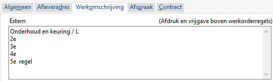

Onderstaande instelling moet op ja staan bij Instellingen werkorders, tabblad Beheer.
-
Gebruik controle bij vrijgeven Optie om de werkorder te controleren, voordat deze vrijgeven wordt:
- Nee, (standaard)
- Ja, bij Invoeren/wijzigen werkorders, verschijnt de knop Controle i.p.v. Vrijgegeven, zie ook Hoe ziet mijn werkorder bon eruit, na controle / vrijgave wat zijn de opties?
Bij het gebruik van de Controle knop, wordt een soort preview van de bon gemaakt ter controle.
Opmerking: Deze controle optie geldt alleen bij externe werkorders.
Bij Invoeren/wijzigen werkorder staat er de knop Controleren i.p.v. Vrijgeven.
-
Kies voor de knop Controleren.

-
Na controle verandert de knop(tekst) in Vrijgeven:

- 1 % van het werkorderbedrag is 60 + 10 = 70,00 is 0,70 klein materiaal kosten.
- De werkbon kan zo gecontroleerd en vrijgegeven worden.
In de regels worden de volgende gegevens (indien aanwezig) toegevoegd ter controle:
- Uren opgegeven via de knop Urendetail zie Werkorder uren registreren.
- Doorbelasting klein materiaal.
- Bij optie Handhaven, opgave vaste prijs/bedrag.
Belangrijk: Bij het verlaten van het programma, verdwijnen deze regels.
In onderstaande voorbeelden zijn deze (toegevoegde) regels zijn groen gemarkeerd.
Tekst regel
De tekst in de eerste regel is de externe tekst in de tabblad Werkomschrijving en wordt pas aangemaakt bij het vrijgeven.

{kind=link}